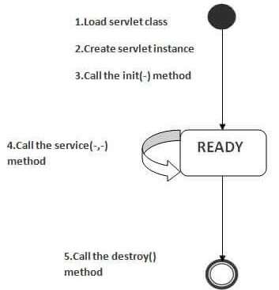

web container maintain the life cycle of a servlet instance
Servlet class is loaded.
when web container receive a request it load Servlet class
ClassLoader is responsible to load Servlet class it find and load class to JVM (or MEM)
Servlet instance is created.
web container create instance of Servlet after loading it
this intance is created only once in life cycle
init method is invoked.
after creating the servlet instance The init method (contructor) is called
web container calls init method only once
service method is invoked.
web container calls the service method each time request for servlet is received
If servlet isn't initialized, it follows three steps above then calls the service method
If servlet is initialized, it calls the service method
destroy method is invoked.
web container calls destroy method before removing servlet instance from the service
It gives the servlet an opportunity to clean up any resource (MEM, thread,...)